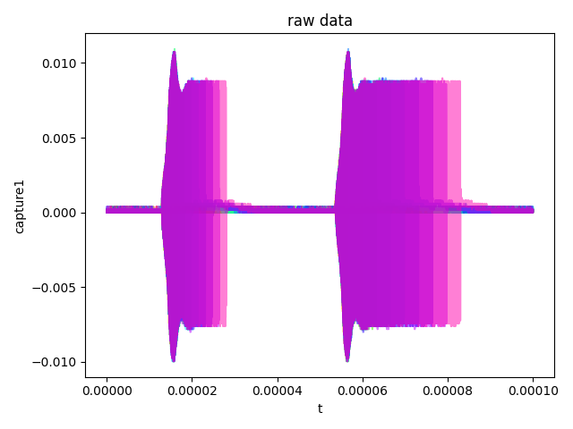
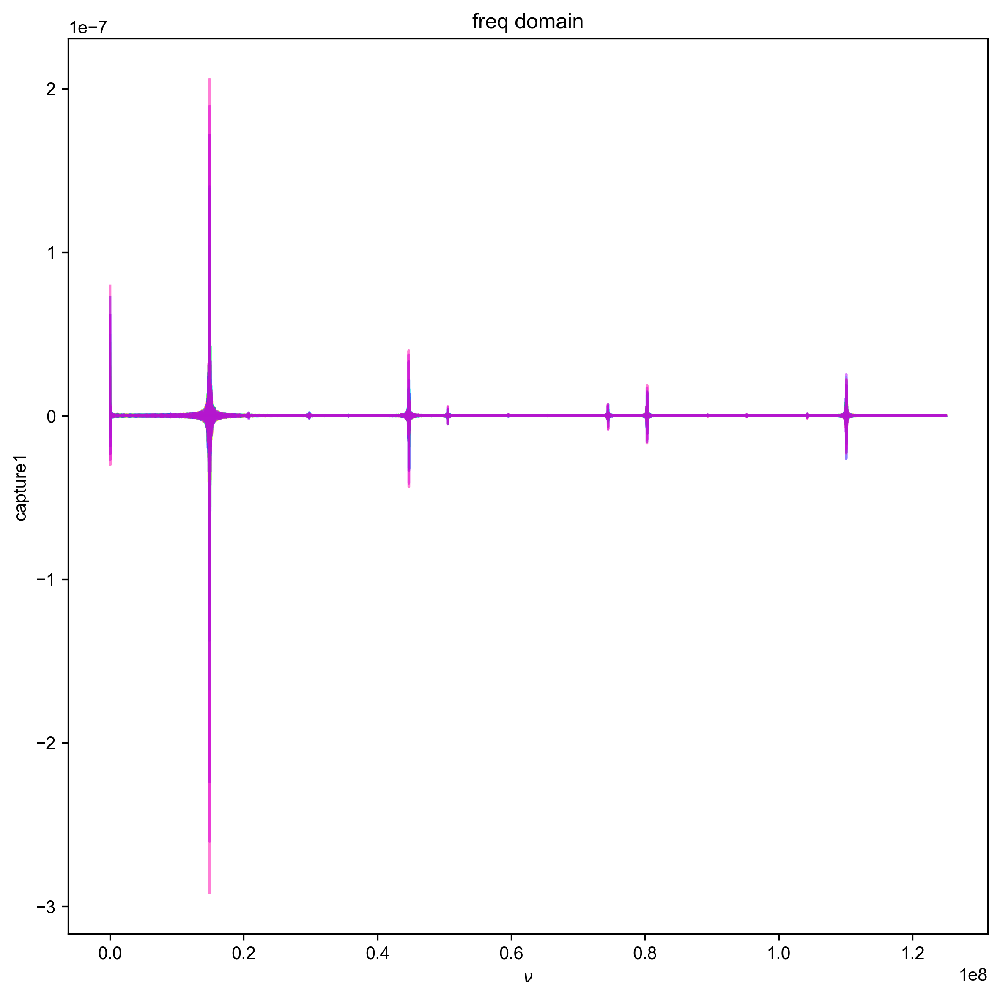
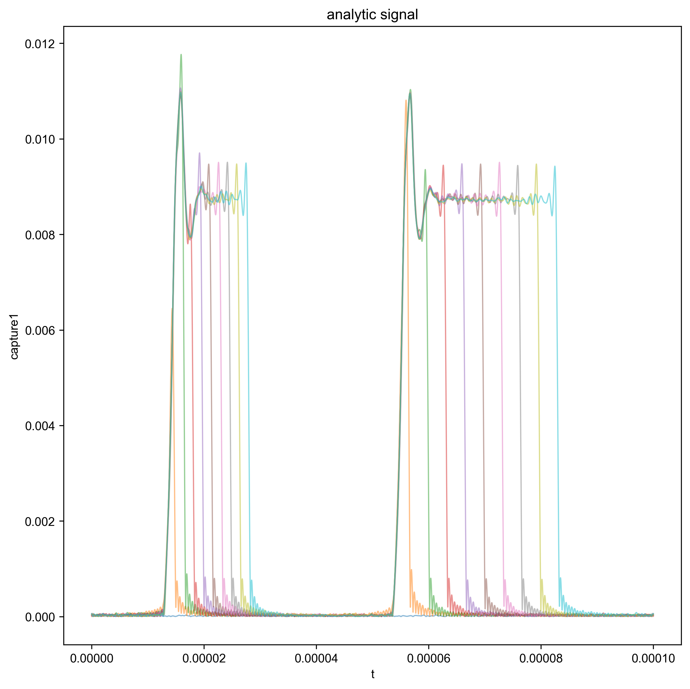
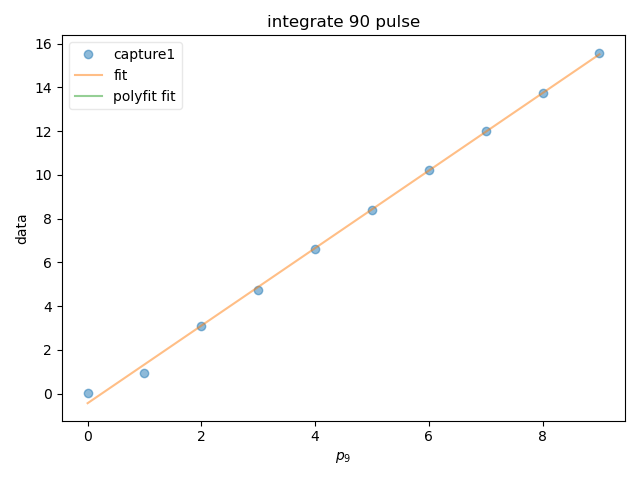
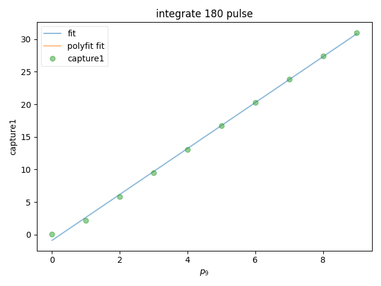

Note
Go to the end to download the full example code
Captured Nutation¶
Processes and visualizes the nutation pulse program that has been captured on a oscilloscope. Integrates the 90 and 180 pulse to show linearity.
- 
- 
- 
- 
- 
C:\ProgramData\Anaconda3\lib\site-packages\matplotlib\cbook\__init__.py:1335: ComplexWarning: Casting complex values to real discards the imaginary part
return np.asarray(x, float)
c:\users\jmfranck\git_repos\pyspecdata\pyspecdata\core.py:1959: UserWarning: marker is redundantly defined by the 'marker' keyword argument and the fmt string "o" (-> marker='o'). The keyword argument will take precedence.
retval = myplotfunc(*plotargs,**kwargs)
{\bf Warning:} You have no error associated with your plot, and I want to flag this for now
c:\users\jmfranck\git_repos\pyspecdata\pyspecdata\core.py:7068: Warning: You have no error associated with your plot, and I want to flag this for now
warnings.warn('You have no error associated with your plot, and I want to flag this for now',Warning)
{\bf Warning:} You have no error associated with your plot, and I want to flag this for now
from pyspecdata import *
from pylab import *
from sympy import symbols, latex, Symbol
rcParams['image.aspect'] = 'auto' # needed for sphinx gallery
# sphinx_gallery_thumbnail_number = 3
with figlist_var() as fl:
for filename, folder_name, nodename, t_min, t_max,ninety_range,oneeighty_range in [
('210204_gds_p90_vary_3', 'nutation', 'capture1',1.4e7,1.6e7,
(1.237e-5,3.09e-5),(5.311e-5,8.8e-5))
]:
d = find_file(filename, exp_type=folder_name, expno=nodename)
fl.next('raw data')
fl.plot(d)
d.ft('t',shift=True)
d = d['t':(0,None)] #toss negative frequencies
# multiply data by 2 because the equation
# 1/2a*exp(iwt)+aexp(-iwt) and the 2 negated the
# half. taken from analyze_square_refl.py
d *= 2
fl.next('freq domain')
fl.plot(d)
d['t':(None,t_min)]=0
d['t':(t_max,None)]=0
d.ift('t')
fl.next('analytic signal')
#{{{ plotting abs
#took out for loop and hard coding p90 times because only GDS parameters saved over
# the pp parameters
for j in range(len(d.getaxis('p90'))):
fl.plot(abs(d['p90',j]),alpha=0.5, linewidth=1)
#}}}
d = abs(d)
#{{{integrating 90 pulse and fitting to line
ninety_pulse = d['t':ninety_range]
ninety_pulse = ninety_pulse.sum('t')
fl.next('integrate 90 pulse')
line1,fit1 = ninety_pulse.polyfit('p90',order=1,force_y_intercept=None)
fl.plot(ninety_pulse,'o')
f1= fitdata(ninety_pulse)
m, b, p90 = symbols("m b p90",real=True)
f1.functional_form = m*p90 + b
f1.fit()
logger.info(strm("output:",f1.output()))
logger.info(strm("latex:",f1.latex()))
fl.plot(f1.eval(100),label='fit')
fl.plot(fit1,label='polyfit fit')
logger.info(strm("polyfit for 90 pulse output",line1))
#}}}
#{{{integrating 180 pulse and fitting to line
one_eightypulse = d['t':oneeighty_range]
one_eightypulse = one_eightypulse.sum('t')
fl.next('integrate 180 pulse')
line2,fit2 = one_eightypulse.polyfit('p90',order=1,force_y_intercept=None)
f2 = fitdata(one_eightypulse)
m, b, p90 = symbols("m b p90",real=True)
f2.functional_form = m*p90 + b
f2.fit()
logger.info(strm("output:",f2.output()))
logger.info(strm("latex:",f2.latex()))
fl.plot(f2.eval(100),label="fit")
logger.info(strm("polyfit for 180 pulse:",line2))
fl.plot(fit2,label='polyfit fit')
fl.plot(one_eightypulse,'o')
#}}}
Total running time of the script: ( 0 minutes 0.945 seconds)